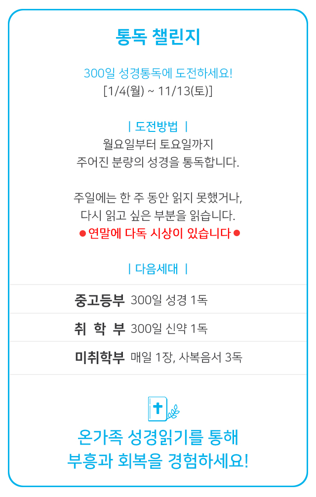
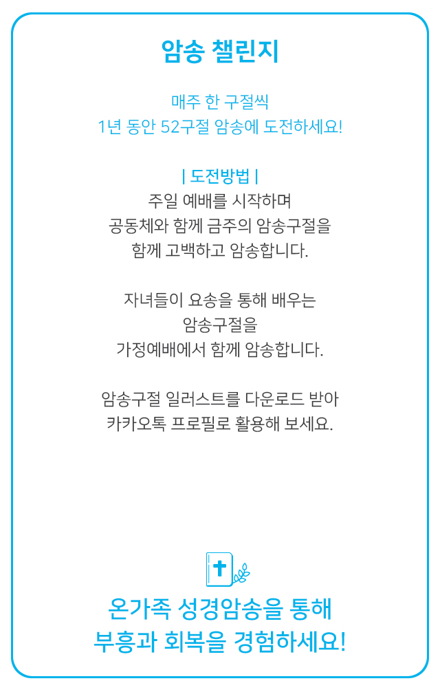
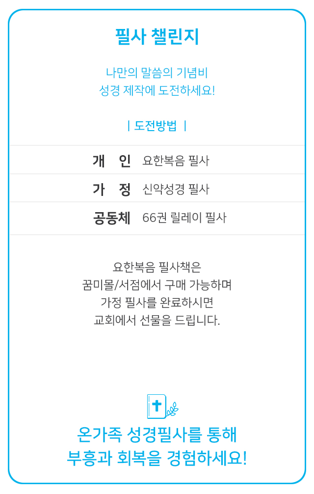
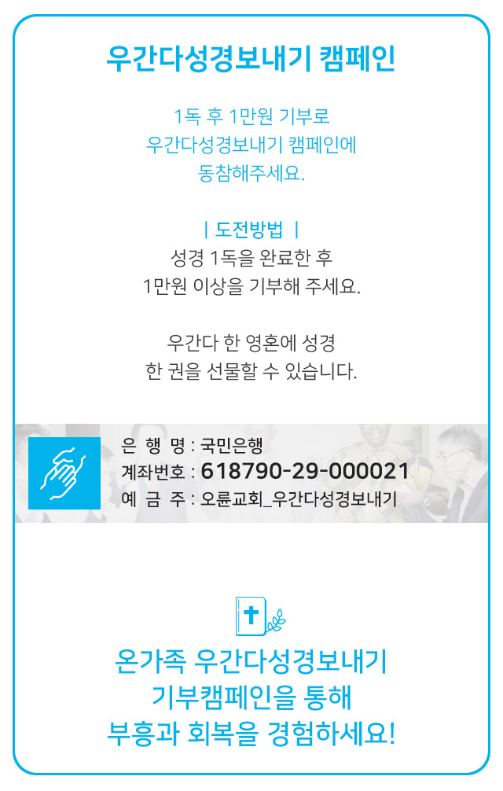

- Read the Bible
- Recite the Bible
- Record the Bible
- Revive your faith
아래로 내려주세요
이번 주 암송구절
This week's Recitation
4주차
"내 율례를 따르며 내 규례를 지켜 진실하게 행할진대
그는 의인이니 반드시 살리라 주 여호와의 말씀이니라"
그는 의인이니 반드시 살리라 주 여호와의 말씀이니라"
(겔 18:9)
이번 주 성경읽기
This week's Bible Reading
| 주차 | 날짜 | 요일 | 오늘의말씀 | 확인 |
|---|---|---|---|---|
| 1 | 1.4 | 월 | 창 1-4 | |
| 1.5 | 화 | 창 5-8 | ||
| 1.6 | 수 | 창 9-11 | ||
| 1.7 | 목 | 창 12-15 | ||
| 1.8 | 금 | 창 16-19 | ||
| 1.9 | 토 | 창 20-23 |
4R 바이블 챌린지
4R Bible challenge
통독 챌린지

암송 챌린지

필사 챌린지

기부 챌린지
